Inspection workflow
Inspection process
The inspection sequence you need to follow to start the inspection process will be this:
- Turn on the LED Panels using the remote control (ON button). You can adjust the brightness with the UP and DOWN arrows. Set it to maximum.
- Turn on the Sony camera. Previously connected to the microcomputer and with the battery dummy already inserted.
- Insert your user credentials and click on SUBMIT. If there was a previous REFERENCE image, it will be loaded.
- Start your inspection process setting a REFERENCE image and then, taking photos of the circuits/ panels to be integrity checked.
Note
Make use of the REPORT feature. That will dramatically improve the recognition capacity of the system in the long run.
Info
Check this quick guide about how to get the best inspection results with the inspection platform
Starting the inspection process
Signing-up + Inspecting your first PCBAs
You need an account user ID and password to use the Agnospcb Inspection tool. You can get one for free to test the service capabilities.
Populate the USER and PASSWORD fields with your details and click on SUBMIT. Your login info will be stored (encrypted) so you do no have to input them again.
The Agnospcb Inspection tool software will “compare” the photograph of your REFERENCE circuit/panel (“golden sample”) with all the photos you will take of the circuit to be inspected (photos to “ANALYZE“)

All the faults found on the inspected circuit/panel will be highlighted (if any).
To set the REFERENCE, click on the ICON “LOAD” and select the desired photo or press the key R to order the camera take a photo of what will be the REFERENCE circuit/panel. If you are using the Agnospcb microcomputer, you can create a REFERENCE image just pressing the INSPECTION button for 4 seconds. That will take a photo of what will be the “REFERENCE” circuit/panel and set it on the LEFT canvas.
Note
We strongly recommend using our inspection platform to get crisp, detailed and shadow-less images of the PCBAs. The REFERENCE photo will remain as GOLDEN SAMPLE as long as you do not change it for another one.

After signing-in, the software will automatically retrieve the last REFERENCE photograph used. Now, take a photo of the circuit you want to “ANALYZE“:
1) If you got the Agnospcb inspection platform with the microcomputer, you just need to push the INSPECTION BUTTON for a second. If the “AUTO-ANALYZE” enabled, the software will automatically process the image, otherwise, press “PROCESS IMAGE” or ENTER on your keyboard.
2) If you are using your own computer and the SONY software, click on the SHOT button.
Note
You can manually select a “to be inspected” photo, clicking on the LOAD ICON of the “TO BE INSPECTED AREA” and select it using the TO ANALYZE button. The software will automatically rotate and align it
Important
While the neural network will discard any minor differences related to lighting conditions, positional or geometric changes among the circuit/elements, we recommend placing the boards to be inspected (within the possibilities) in the same position when taking the photos. The inspection resulting images will be stored in the /PCB_OUT folder.
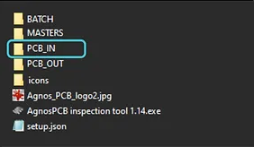
COMPUTERS USERS: Auto Analyze STEPS: SET your REFERENCE image (Button REFERENCE) ENABLE “AUTO ANALYZE” ticking its box Take a photo of a circuit you want to inspect using the REMOTE app (You can use the key ” 1″ from your keyboard to take the photo when the REMOTE tool is active) or using your own camera system. The software will display the result of the inspection within seconds REPEAT: Take another photo of the next PCBA you want to inspect. The software will process it automatically.
How to do an inspection
Start by opening the Agnospcb application and entering your username and password. Once opened, load the reference of your file with the "open reference" button and the reference will be automatically loaded on the screen. Also, save the reference in the mosaic, remember that you can load the different references by using the keys where they are saved such as F1, F2, F3, F4....
After uploading the REFERENCE, use the ¨Open UUI¨ button to upload the UUI photo. Once uploaded it will be processed automatically and will start pointing out possible errors. To move through them use the "right" or "left" keys and to mark an error use the "up" key.
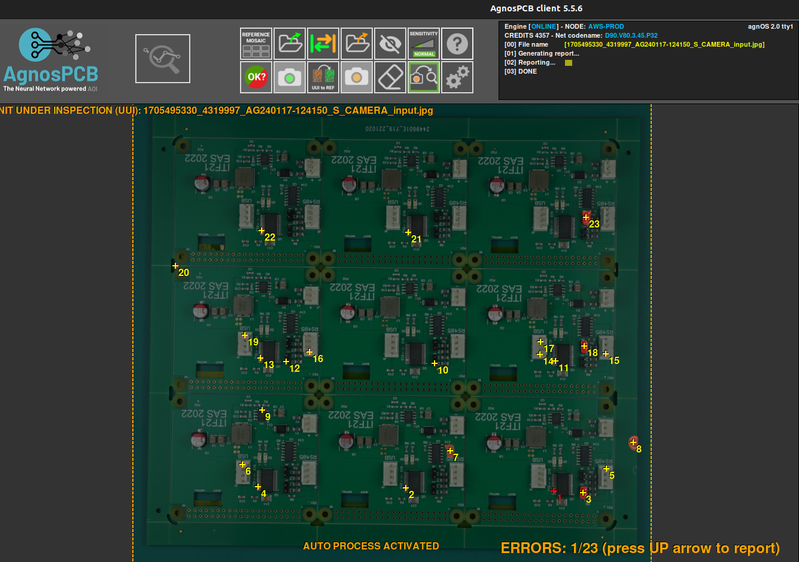
When marking an error you can either not specify it or you can mark it as one of the following options:

Once you have checked and marked all errors in the UUI you can finish the inspection by clicking on the ¨finish inspection¨ button.
Pressing the button will open a window where you can rename the file, add comments and select if the UUI is OK or if it has unpassable errors. After this a pdf report will be generated.
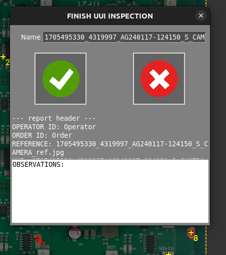
To view the generated report you must go to the ¨PCB_OUT¨ folder, where all generated reports will be stored.
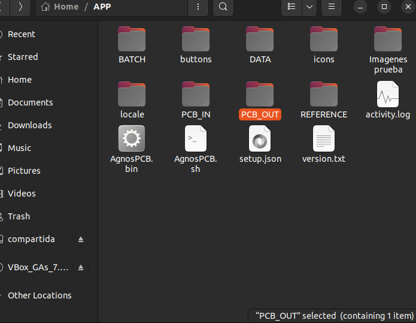
The report will show the date, whether or not the pcb has passed the inspection, the data, the observations, the UUI and REFERENCE image and the errors together with their specifications.
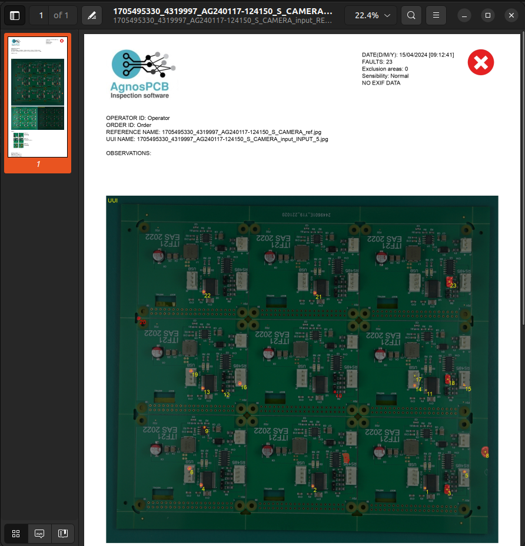 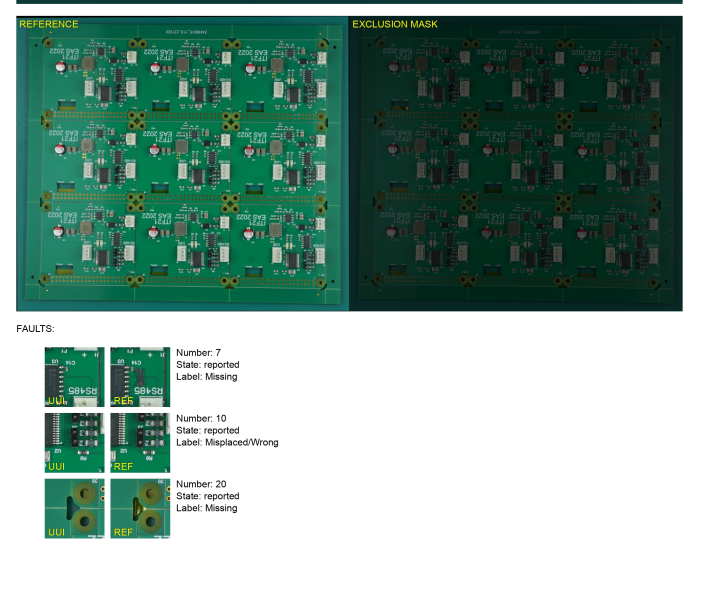
Other functions
- Draw exclusion area
With this button you can select one or more areas that will be completely ignored by the processor. That is, no errors found in those areas will be detected. You can select as many areas as you want.
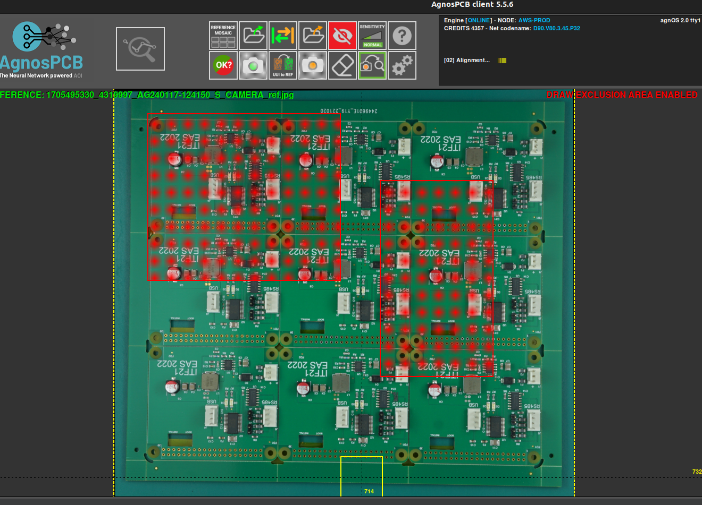
- Remove area
In case you have selected an area by mistake with the previous function or you do not want to keep it selected, you can use this button to deselect it.
- Swap workplace
With this button you can switch between REFERENCE and UUI. You can either press the button or use the TAB keyboard shortcut

- Sensitivity The app allows you to change the sensitivity levels for error detection from normal, high and very high. Note that the higher the sensitivity, the more errors it can detect.
Example: normal sensitivity
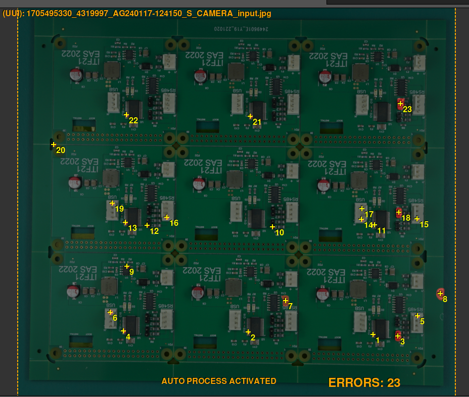
Example: high sensitivity

Example: very high sensitivity

Note how it detects twice as many possible errors at very high sensitivity compared to normal sensitivity.
- UUI to REFERENCE
This button allows you to change a UUI image and convert it into a REFERENCE.
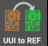
Finally, you can change other aspects with the ¨settings¨ button. Once clicked, the following screen will appear where you can change and adjust factors such as workflow, path and others to your liking.
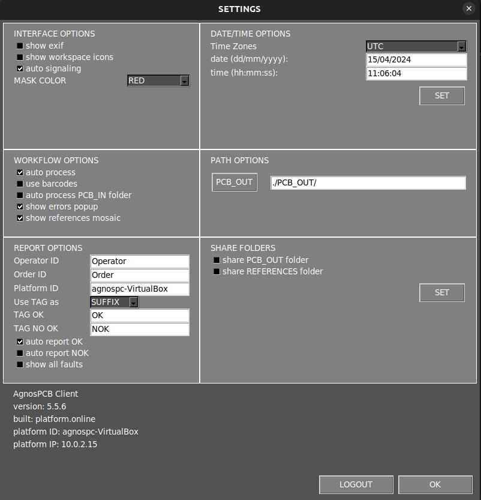
- In case you want to analyze only a part of the UUI image you can select the part to be analyzed by right-clicking and dragging to include the desired area.
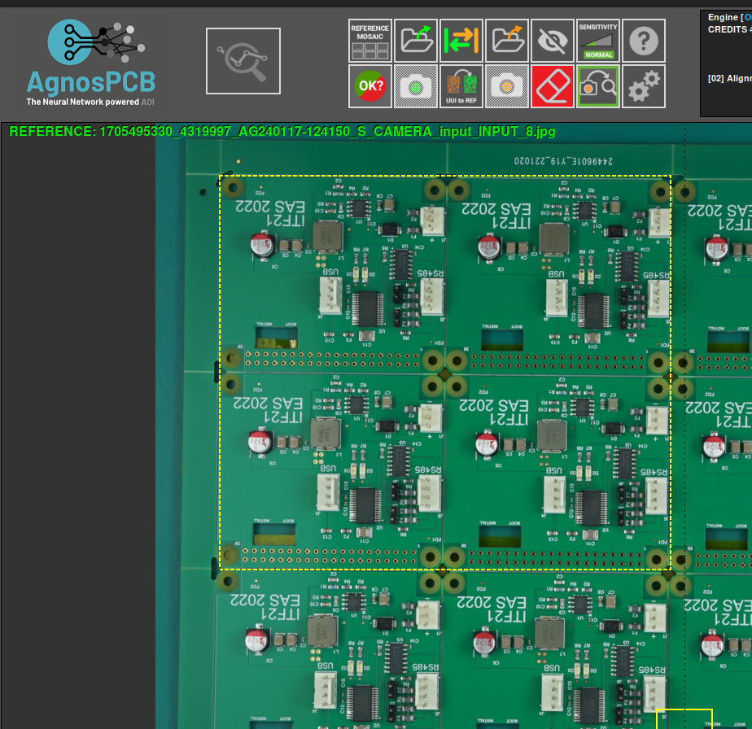
Once the area is selected in the reference image, loading the UUI automatically inspects only the selected area.